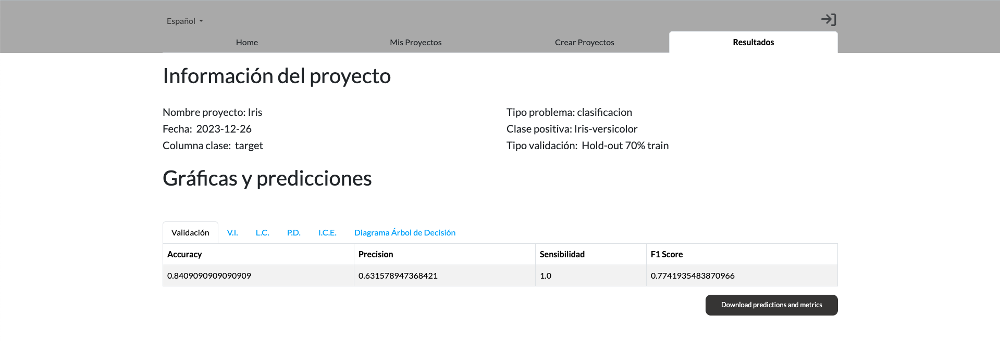
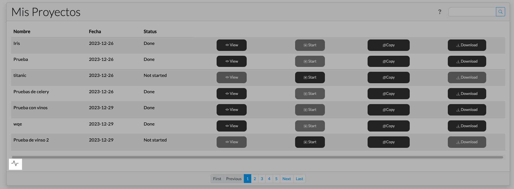

{{ gettext('A continuación, se muestra una guía que describe las acciones que se pueden realizar con un proyecto creado.') }}
{{ gettext('Además, de las acciones se muestran el nombre del proyecto, la fecha en la que el proyecto fue creado y el estado en que se encuentra. Entre los estados posibles tenemos:') }}
{{ gettext('Not configured: El proyecto todavía no se ha terminado de configurar, por lo tanto, no se ejecutar. En este caso se muestra
una ventana emergente que pregunta al usuario si quiere terminar de configurarlo.') }}
{{ gettext('Not started: El proyecto todavía no se ha ejecutado. Las acciones posibles son "Copy" y "Start".') }}
{{ gettext('Running: El proyecto está ejecutándose. La acción posible es "Copy".') }}
{{ gettext('Done: El proyecto ya se ha ejecutado. Las acciones posibles son "View", "Copy" y "Download".') }}
{{ gettext('Además, de las acciones definidas arribas también está la acción borrar que elimina un proyecto seleccionado.
Si desea eliminar todos los proyectos deberá decir el comando de voz "Eliminar (o borrar) todos los proyectos.".
Finalmente, todas las acciones se pueden ejecutar mediante comandos de voz, por ejemplo si quisieramos visualizar un proyecto
tendríamos que decir "Visualizar el proyecto 1", y visualizariamos el proyecto con ID 1. La estructura de estos comandos es "Acción" el proyecto "ID".') }}
{{ gettext('Acción View') }}
{{ gettext('Una vez que el proyecto este ejecutado podremos realizar la acción "View". Si le damos al botón este nos llevará a la pestaña de resultados dónde
aparecerán los resultados y gráficas de explicabilidad de nuestro proyecto.') }}

{{ gettext('Imagen 1: Vista de resultados del proyecto') }}
{{ gettext('Acción Start') }}
{{ gettext('Cuando pulsemos el botón "Start", empezará la ejecución del proyecto. Lo primero que vemos es que el status cambia de "Not started" a "Running". Además
se puede visualizar el progreso del proyecto si le damos al icono que se muestra en la imagen 1. En este icono aparecerán todos los proyectos que estemos ejecutando,
incluso si cerramos sesión o salimos del navegador.') }}

{{ gettext('Imagen 1: Icono carga') }}
{{ gettext('Acción Copy') }}
{{ gettext('Con está acción lo que podrás hacer es crear un proyecto nuevo con la misma configuración que el proyecto al que le has dado a "Copy". Esta acción
es muy útil si lo que quieres es cambiar una variable o el algoritmo del proyecto, y no quieres hacer el proyecto desde 0.') }}
{{ gettext('Acción Download') }}
{{ gettext('Por último, lo que hace está acción es descargarte un zip que contiene los siguientes elementos:') }}
{{ gettext('Modelo: El modelo que se ha generado al ejecutar el proyecto. Es importante saber que el modelo es de H2O por lo que se guarda en formato MOJO.
Para más información visitar la página de ') }}{{ gettext('H2O') }}
{{ gettext('X-Model-Metrics-X-X.csv: Archivo csv que contiene las métricas del modelo. En caso de que el modelo sea de clasificación incluye:') }}
{{ gettext('Exactitud') }}
{{ gettext('Sensibilidad') }}
{{ gettext('Precisión') }}
{{ gettext('Puntuación F1') }}
{{ gettext('Especificidad') }}
{{ gettext('NPV') }}
{{ gettext('En caso de que el modelo sea de regresión incluye:') }}
MAE
MAPE
MSE
RMSE
R2
{{ gettext('X-Model-Predictions-X-X.csv: Archivo csv que contiene las columnas que se han seleccionado, más una columna adicional con la predicción realizada por el modelo.') }}
{{ gettext('Gráficas: Por último, también incluye todas las gráficas que se han generado para el problema. Hay que tener en cuenta que dependiendo del algoritmo y el tipo de problema se pueden generar unas gráficas u otras.') }}